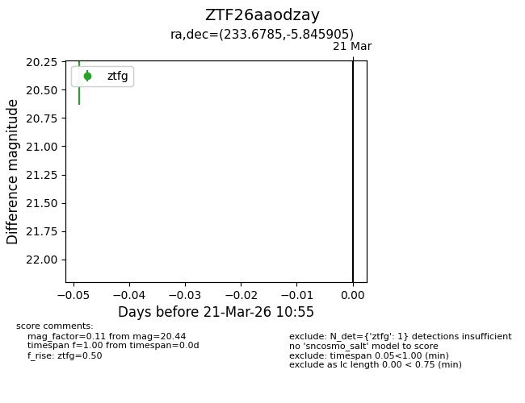
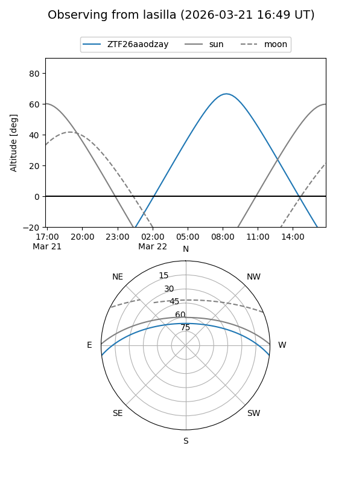
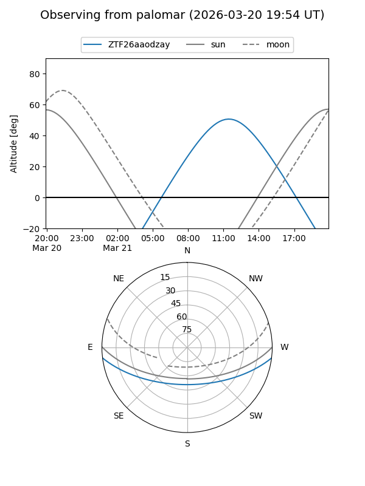

ZTF26aaodzay
Target ZTF26aaodzay at 2026-03-21 10:57
Aliases and brokers:
FINK: link
Lasair: link
ALeRCE: link
alt names
ZTF26aaodzay (ztf,fink_ztf)
Coordinates:
equatorial (ra, dec) = 233.6785,-5.84591
equatorial (HMS+DMS) = 15:34:42.84,-05:50:45.26
galactic (l, b) = (359.2164,+38.57785)
Flags:
Photometry:
last ztfg=20.44
1 ztfg detections
Lightcurve

Visibility


Additional plots